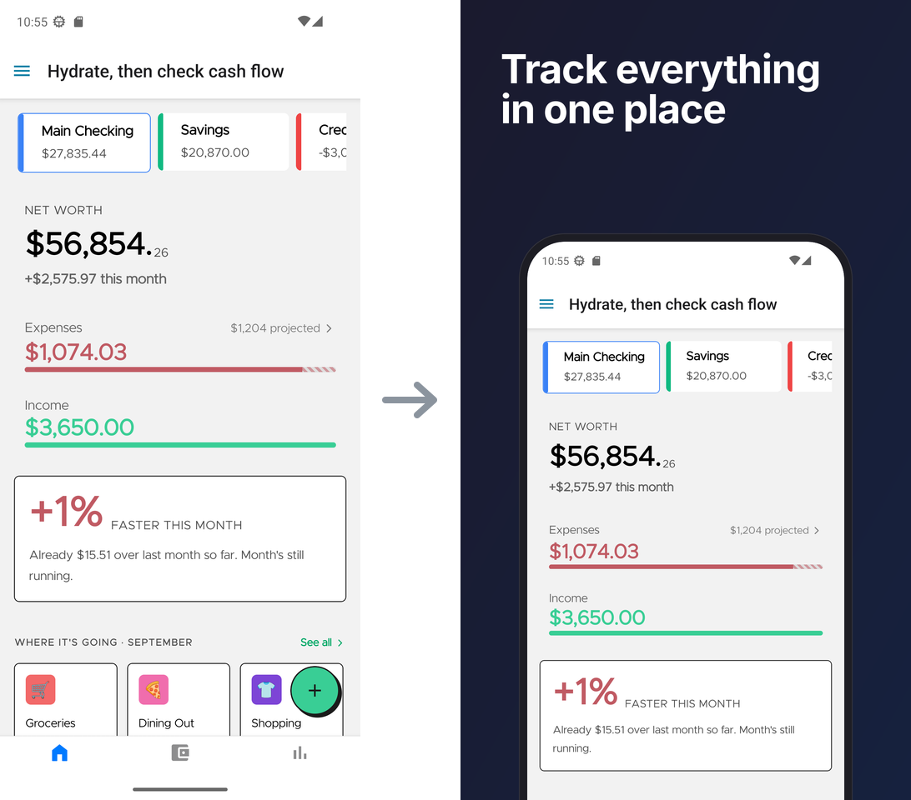

showpiece
Your app changed. Your Play Store screenshots did not.
Capture your Android app, turn the screenshots into store-ready images, and publish them to Google Play - all from the terminal and one config file.

Install
npm install --save-dev showpiece npx showpiece capture npx showpiece frame npx showpiece publish --dry-run
What it does
- No production buildIt captures any installed build: a Metro debug build, an Expo dev client or an old APK.
- No design toolThree templates make store-ready 1080×1920 images with your captions.
- No Play Console uploadIt replaces the listing screenshots with the Play Developer API.
--dry-runchecks everything without a change.
Limits
showpiece supports Android and Google Play only, with one locale. iOS and several locales are on the roadmap.
Help shape showpiece
Thank you for being here! ٩(ˊᗜˋ*)و
showpiece is young, and what I build next depends on how you make store screenshots today. Maybe you use showpiece every week, maybe you tried it once, or maybe you are only curious. I want to hear from you either way.
- A 15-min call: book a time. These calls decide the roadmap. As thanks, I email you a one-page summary of what I learn: how other teams make their store screenshots, and what I build next.
- No time for a call? Tell me in Discussions.